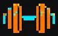
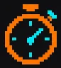
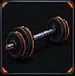

Treino em Andamento:Cargas pré-preenchidas com a sua última performance — ajuste o que realmente fez e toque em ✔ Registrar. O descanso começa sozinho.

Descanso 00:00Registro rápido
Exercício, carga e reps — os detalhes opcionais ficam logo abaixo.
🗺️ Mapa de prontidão muscular abrir ▾
🧬 Prontidão e volume da semana
Prontidão estimada combina uma janela de tempo (24 h a 72 h) com as séries da semana (faixa configurada: 10–20 por grupo; Antebraço 4–10). Sem histórico direto ou indireto, o estado aparece como Sem dados, não como recuperado. Os percentuais são heurísticas de planejamento calculadas a partir dos registros; não medem recuperação fisiológica nem fadiga, e 100% não garante recuperação completa. Registro com data futura conta como hoje (a estimativa não antecipa a janela). Não substitui orientação profissional.
Faixas de séries da semana · meta configurável pelo app/usuário (editar)
Meta pessoal de contagem de séries registradas por grupo; não é mínimo universal nem orientação de treino. Deixe em branco para usar o padrão. Máximo permitido: 100.
Prontidão estimada: estimativa baseada em tempo desde o último treino e volume semanal; não mede fadiga. Não substitui orientação profissional.
🏃 Cardio / Corrida
Distância e tempo viram XP e dano ao chefão — toque para registrar.
＋ Registrar
🏃 Cardio / Corrida
Distância e tempo viram XP e dano ao chefão — toque para registrar.
📋 Exercícios Registrados Na Data
🎯 Montador
Crie e salve suas rotinas. Para começar uma sessão, use ▶ Iniciar no treino salvo.
🎯 Criar Treino
Escolha os exercícios e as metas, salve o treino e reutilize para registrar as cargas rapidinho durante o treino.
💡 Sugestões automáticas do catálogo e do seu histórico ao selecionar o grupo.
📋 Exercícios do Treino 0
💾 Treinos Salvos
📜 Histórico
🔎 Buscar Exercício
Nome, apelido (bench press, rdl) ou tag — e combine as tags acumulativas.
📚 Buscar no Histórico
Todos os seus registros, filtrados por texto, grupo, período e pelas mesmas tags.
🏷️ As tags marcadas acima também valem aqui — com o mesmo modo OU/E.
🏃 Corridas
Corrida (Rua) e Corrida (Esteira). Outras modalidades de cardio continuam no Histórico.
Evolução por período
Totais de todas as corridas: pace médio = tempo total ÷ km total. Semanas seguem o calendário ISO.
Semanas ISO recentes
Meses recentes
Anos recentes
🏅 Recordes informativos
Pace médio da corrida inteira, não tempo oficial de prova. Estes recordes não alteram o PR de cardio, XP ou combate do jogo.
👟 Km por tênis
Somente corridas com tênis informado; nomes antigos dos registros não são modificados.
Histórico de corridas
Filtros afetam somente esta lista. Para todos os cardios, use Histórico.
⚔️ Arena de Batalha de Chefão
Cada série efetiva causa 1 DMG (até 20 por grupo/semana). O grupo menos estimulado na semana anterior recebe dano ×2; um PR qualificado é crítico ×2. Cardio usa conversão própria.
👹 Lista de Titans & Bosses
🎨 Estúdio de retratos
Troque a arte de qualquer chefão pelas reservas do tema — ou volte ao retrato padrão. A escolha fica salva neste aparelho.
🎯 Missões da Semana
Missões com XP extra — o nome acompanha o tema (Missão, Prova de Cosmo, Trabalho Extra...).
🏆 Temporadas (ciclos de 4 semanas)
🎨 Personalizar Story Card
Paleta, moldura e tipografia acompanham automaticamente o tema da gamificação.
Adicione uma foto deste treino.
🌍 Perfil Global
XP e patente globais; o tema ativo define a skin e as coleções de chefões.
📈 Progressão de Volume (Últimas Sessões)
🎯 Evolução por Exercício (carga & 1RM)
🧬 Séries Semanais por Grupo Muscular
🧪 Modo Testes — marcos de capacidade
Máximo de barra, prancha e outros testes: meta, progresso e histórico.
🎖️ Conquistas Berzerker
🎯 Calculadora de 1RM (Epley)
Estime sua repetição máxima teórica.

Aquecimento & Calculadora de AnilhasPirâmide de aquecimento e montagem de anilhas por lado.
⚙️ Configurações de Perfil
Defina seu peso corporal para cálculo relativo de força.
🏋️ Treino & Recuperação
Semana de deload: volume rende 50% do XP e cada dia de descanso rende +25 XP de recuperação — o app não pune quem recupera. A 4ª semana de cada temporada já é deload automático.
📊 CSV (formato da planilha)
Exporte/importe no mesmo formato multi-aba da sua planilha (Data;Sessão;Exercício;Carga registrada;S1..S5;... com --- Sheet: ... ---) e acabe com a digitação dupla. Também dá para fazer tudo na aba 📜 Histórico.
🗄️ Armazenamento
💾 Backup & Restauração JSON
O backup inclui tudo: registros, treinos, tema, retratos dos chefões, testes, temporadas e configurações.
© 2026 Lucas Rangel · Todos os direitos reservados
Diário de Cargas // Berzerker Mode — obra original protegida pela Lei nº 9.609/1998 e pela Lei nº 9.610/1998. Proibida a cópia, a modificação ou a redistribuição, no todo ou em parte, sem autorização por escrito do autor.